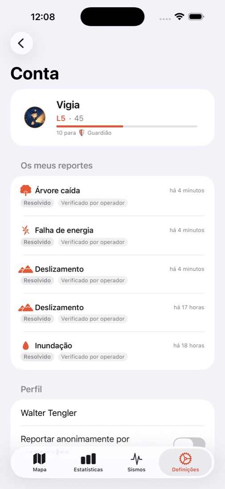

Zivilschutz-Warnungen für Ihre Gegend, auf Ihrem Handy.
Sehen Sie alle Einsätze der ANEPC und alle Erdbeben des IPMA auf einer Live-Karte. Wenn in Ihrer Nähe oder an Orten, die Ihnen wichtig sind, etwas passiert, warnt Alerta Sie sofort.

- Schritt 1
Gebiet festlegen
Ein Radius um Ihren Standort, ganze Distrikte oder Orte Ihrer Wahl, etwa das Haus Ihrer Eltern.
- Schritt 2
Auswählen, was Sie wissen wollen
Brände, Unfälle, Überschwemmungen, umgestürzte Bäume, Erdbeben ab einer Magnitude. Nur was Sie betrifft.
- Schritt 3
Warnung erhalten
Eine Mitteilung mit der Art des Einsatzes, der Entfernung und dem genauen Ort.
Was die App bietet
Alles, was der Zivilschutz veröffentlicht, so aufbereitet, dass man es auch unter Stress schnell erfasst.

Jeder Einsatz im Detail
Wo, seit wann, in welchem Stadium und wie viele Kräfte vor Ort sind.
- Feuerwehrleute, Fahrzeuge und Luftfahrzeuge
- Zeitverlauf seit der Alarmierung
- Schweregrad und aktueller Status

Das Land in Zahlen
Aktive Einsätze, Einsatzkräfte, Fahrzeuge und Luftfahrzeuge in ganz Portugal, mit Diagrammen für 24 Stunden, 30 Tage oder ein Jahr, auch nach Distrikt.

Erdbeben
Offizielle IPMA-Daten für das Festland, Madeira und die Azoren, dazu USGS-Daten für den Rest der Welt. Verlauf über 24 Stunden, 7 oder 30 Tage, und Warnungen erst ab der Magnitude, die Sie wählen.

Melden, was Sie sehen
Ein umgestürzter Baum, eine gesperrte Straße, ein Stromausfall: Typ wählen, Foto machen, absenden. Die Standortdaten des Fotos werden vor der Veröffentlichung entfernt, und jede Meldung wird von einem Moderator geprüft.
Melden Sie sich mit Apple oder Google an, oder melden Sie anonym.

Von Zivilist bis Mythisch
Zehn Reputationsstufen. Jede von einem Moderator bestätigte Meldung erhöht Ihr Vertrauen, ungültige Meldungen senken es. Verfolgen Sie Ihre Meldungen und Ihren Fortschritt zur nächsten Stufe.
Weitere Funktionen
Sicherheitskreis
Teilen Sie Ihren Standort mit Familie und Freunden, senden Sie ein SOS oder melden Sie, dass Sie in Sicherheit sind.
Meine Orte
Warnungen für andere Orte als Ihren Standort, etwa das Haus der Eltern oder die Ferienwohnung.
Gebietsalarme
Folgen Sie ganzen Distrikten oder den Unterregionalkommandos der ANEPC.
Großeinsätze
Eine landesweite Warnung, wenn ein Einsatz sehr viele Kräfte bindet. Lässt sich abschalten.
Warnungen, die Ihnen folgen
Optional: Die App hält Ihr Warngebiet auf Reisen im Hintergrund aktuell, auch wenn sie geschlossen ist.
Kartenlegende
Alle Farben und Symbole erklärt, dazu ein Auge bei Einsätzen unter Beobachtung.
Woher die Daten kommen
Öffentliche, offizielle Quellen, automatisch abgefragt.
Portugals nationale Behörde für Notfälle und Zivilschutz. Einsätze im ganzen Land, alle 10 Minuten abgefragt.
Portugiesisches Institut für Meer und Atmosphäre. Erdbeben auf dem Festland, auf Madeira und den Azoren.
Geologischer Dienst der USA. Erdbeben im Rest der Welt.
Meldungen von Nutzern, von Moderatoren geprüft und immer als solche gekennzeichnet.
Alerta dient nur zur Information und ersetzt keine offiziellen Kanäle. Im Notfall wählen Sie die 112.
Voraussetzungen
- iOS 18.0 oder neuer
- iPadOS 18.0 oder neuer
- macOS 15.0 oder neuer
- Android 8.0 oder neuer
Support
Fragen oder Feedback? Schreiben Sie an walter.tengler@gmail.com.
Alerta nutzt offizielle Daten des portugiesischen Zivilschutzes. Ihr Standort verlässt das Gerät nie ohne Ihre Zustimmung.